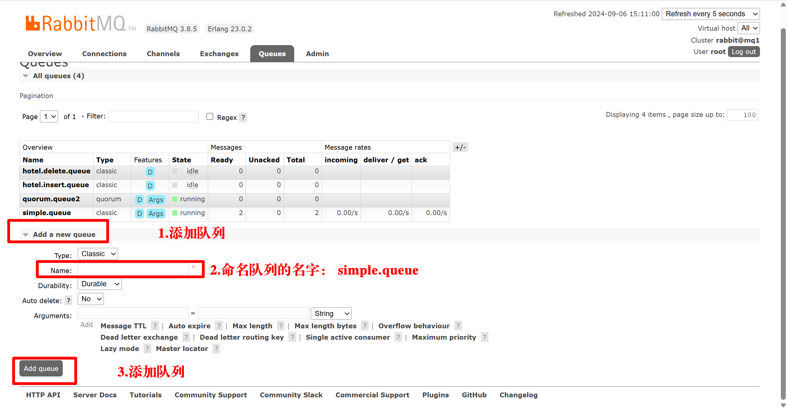

RabbitMQ
同步通信与异步通信
feign 无法解决的问题
假设有一个场景：
客户端发起请求购买商品，此时使用feign的时候，调用链应该如下
客户端 -> 支付服务 -> 订单服务 -> 支付服务 -> 仓储服务 -> 后续服务 -> 支付服务 -> 客户端
可以看到，这条链还是非常长的，而且引发了以下问题：
代码耦合度非常高：
假设在需要加入新的业务需求，那么就需要在支付服务（见下图）中改代码，来一个新需求加一个，非常麻烦。
再来就是业务之间是一个调用一个的链式调用，如果中途有个服务挂了，那么整个项目也就一起挂了。
同步调用非耗时间：
每当有客户发送支付服务的请求，就需要等待订单服务反馈回支付服务后才能继续发送仓储服务的请求，如此反复的把所有业务跑完，非常耗时间。假设回到支付服务再反馈到客户所需时间需要500毫秒，也就等于1秒中只能处理两个客户，效率非常低。这种接口等待引发的问题甚至导致资源利用率下降，每个接口都需要等待其他业务响应结束才能执行。
资源浪费：
同步调用的时候，调用链中的每个服务都在等待响应，不能释放请求的资源，高并发的场景下会极度的浪费资源。
异步调用方案
在同步调用的基础上改造代码，通过使用中间件的方式（发布/订阅者模式）异步实现。
同步调用时的流程：
客户端 -> 支付服务 -> 订单服务 -> 支付服务 -> 仓储服务 -> 后续服务 -> 支付服务 -> 客户端
异步调用时的流程：
客户端 -> 支付服务 -> broker ，此时根据订阅的 broker 的服务进行异步的调用服务：
也就是说，到 broker 开始，同时进行的服务有：
broker -> 订单服务
broker -> 仓储服务
broker -> 短信服务
broker -> 支付服务 -> 客户端
同时进行的服务取决于是否和 broker 为发布/订阅模式。
broker相当于一个服务的代理，能解决的问题：
- 耦合度降低。支付服务不再需要调用订单服务等接口，只需要后续服务在broker接口注册服务，然后让支付服务发送一个通知即可。
- 吞吐量提升。既然不需要后续服务等待，只是发布通知，用户调用支付服务接口再调用broker后就可以返回用户反馈，时间缩短。
- 故障隔离。假设仓储服务挂了也不影响支付服务反馈给客户，自己处理仓储服务的故障即可。
- 流量削峰。多并发时可以对访问量进行缓冲，微服务基于自己的能力从broker中获取访问量处理业务。
Broker：MQ
使用异步通信的中间件通常是消息队列，也就是MQ。
常用 MQ
这里结合 RabbitMQ 和 SpringCloud 介绍一下如何使用 MQ 优化项目的速度，在那之前先介绍几个概念：
RabbitMQ介绍
结合刚刚订单的例子，不难发现，支付服务为 publisher，也就是发布者；订单服务、仓储服务等为 consumer，也就是消费者；中间件 broker为我们即将介绍的 rabbitMQ。
所以学习 MQ，我认为需要知道的知识就只有几个：
- MQ 内的构造是怎样的？
- publisher 如何将消息发送给 MQ?
- MQ 如何将消息发送给 consumer？
结合这几个问题，我们来开始学习MQ。
安装 RabbitMQ
由于我使用的是docker，所以我按照docker来写教学
第一步：拉取镜像，拉取的版本可自行决定，报错的话另外找命令
1 | docker pull rabbitMQ latest |
第二步：给mq镜像创建容器，中间设置的账号密码可以改成自己记得住的
1 | docker run \ |
此时容器正常运行会返回我圈出来的那一部分。
第三步：浏览器输入ip+端口号打开客户端。有正常显示登陆的页面则配置ok。账号密码为第二步你设置的值。
下面根据这个主页对内部结构做介绍。
RabbitMQ内部结构
RabbitMQ中的几个概念：
• channel：通道，操作MQ的工具
• exchange：交换机，路由消息到队列中
• queue：队列，消息存储，缓存消息
• virtual host：虚拟主机，根据不同用户对queue、exchange等资源的逻辑分组，避免队列冲突。就和nacos的namespace一样，分组后队列名字即使相同但是彼此之间不可见对方的队列。
后端配置
这是一个mq的demo的项目结构
使用MQ之前需要在项目中引入springAMQP的依赖。这一步直接在父项目中添加。
1 | <dependency> |
在发布者和消费者的项目中添加yml文件配置。
1 | spring: |
然后接下来通过消息模型来实践MQ。
快速入门：基本消息队列
基本消息队列通过发布者 -> queue -> 消费者的方式实现。基本消息队列不使用exchange交换机，而只是使用队列queue。
发布者中，创建一个测试类去编写测试方法，通过 rabbitTemplate 类，将消息和队列作为参数调用 convertAndSend 方法。
1 |
|
在消费者中，消费传递过来的消息，使用@RabbitListener注解监听simple.queue队列的消息。
1 |
|
在客户端中，创建一个叫simple.queue的队列

此时跑一下测试方法，返回浏览器可以看到具体的信息。
由于消费者被处理成一个bean，所以我们需要将消费者的启动类跑起来。里面的Jackson2JsonMessageConverter，在消息转换器中介绍。
OK，到此处我们已经将队列的基本流程弄清楚了。
总结一下：
- 引入依赖
- 消费者、发布者配置ip，端口号，mq账号密码等信息
- 发布者编写测试方法，mq注册一个队列
- 消费者注册成bean，绑定同一个队列，接收消息
消息模型
MQ的消息队列有以下5中，根据使用方式又分为是否使用交换机。
刚刚介绍了基本消息队列，现在我们介绍其他的队列模式。
工作消息队列
和基本消息队列的代码（原理）一样，在基本队列的基础上连接多个consumer。

假设consumer1的处理速度比consumer2的处理速度快，为了实现能者多劳的效果，可以在application.yml文件中配置预取消息的上限。设置后会让队列中的消息无法进入没有处理完业务的消费者，而是能者多劳，处理业务更快的消费者多拿消息，防止效率低的拿了但是处理速率慢，消息滞留。比如我让方法1睡20毫秒，方法2睡200毫秒，然后发布者一秒发50条消息：
发布者：
1 | @Test |
消费者：
1 |
|
打开消费预取限制：
也是刚才的场景，如果方法2执行的速度更慢一些，那么可以打开这个限制，让每个方法都执行完业务以后再从队列中获取消息，防止消息在处理速度慢的消费者中滞留却不能运行，保证能者多劳。
发布订阅模式
一开始说的同步和异步的问题，我们是为了实现一个服务通过broker对后续服务进行发布，但是使用基本消息队列和工作消息队列就不能实现这个要求。因为消息被一个消费者处理以后就消失了。而MQ的发布订阅模式可以实现这个要求，决定消息发给哪些队列，则是靠交换机实现的。
FanoutExchange
配置类FanoutConfig中需要绑定交换器和队列（DirectExchange 中提供简化方案）
FanoutExchange类，用于定义交换器
Queue类（amqp.core），用于创建队列对象
binding类，用于绑定交换机和队列。
publisher使用rabbitTemplate调用convertAndSend方法时第一个参数不是队列，而是交换机的变量名。
consumer根据队列绑定同一个FanoutExchange接受同一个消息。
DirectExchange
在publisher中指定RoutingKey指定绑定规则：
简化configuration类去配置交换机和队列的绑定，使用@RabbitListener注解的binding属性的@queueBinding值配置队列、交换机、路由规则：
@RabbitListener注解作用在consumer类中
TopicExchange
消息转换器
publisher调用convertAndSend方法时，可以发送的参数类型是object类型。但是在发送时，在队列中会对对象进行序列化成字节发送。为了提高可读性可传输效率，推荐使用json的方式进行序列化
使用json的bean对象注入ioc容器中，会覆盖原本的SimpleMessage -Convcerter处理方式。同时需要保证publisher和consumer使用一样的消息转换方式，否则信息不一致。